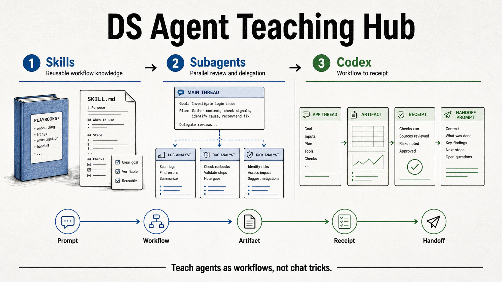

Skills for DS
Reusable workflow knowledge for teams that keep re-explaining prompts, context, metric rules, and report formats.
Start with skillsA practical curriculum for data scientists learning skills, subagents, Codex, artifacts, receipts, and handoff.

Sessions
Reusable workflow knowledge for teams that keep re-explaining prompts, context, metric rules, and report formats.
Start with skillsParallel review, delegation, and multi-perspective analysis. This track is planned as the next repo import.
Coming nextCodex App and CLI setup, workflow routing, live workshop facilitation, artifacts, receipts, and handoff.
Open Codex trackRecommended Paths
Standalone Project